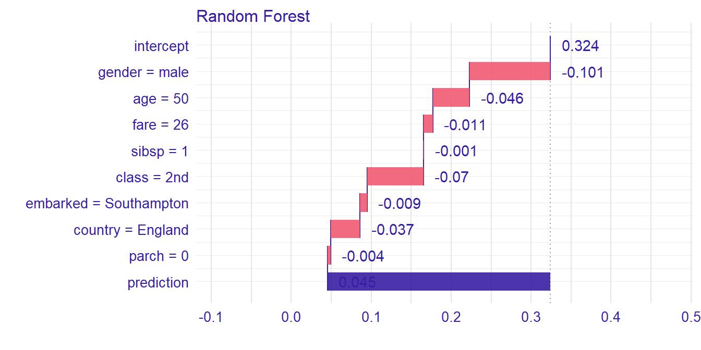
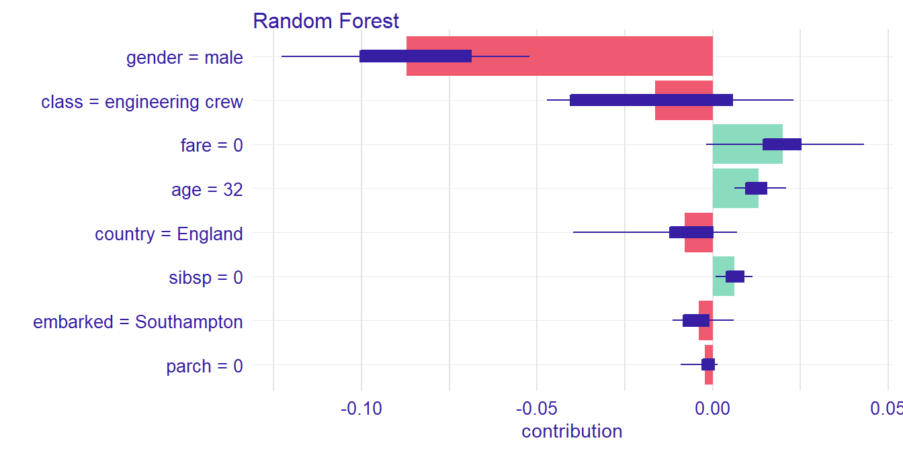

Describing Explanations
vignette_iBreakDown_description.RmdIntroduction
We adress the problem of insuficient interpretability of explanations for domain experts. We solve this issue by introducing describe() function, which automaticly generates natural language descriptions of explanations generated with iBrakDown package.
iBreakDown Package
The iBreakDown package allows for generating feature attribution explanations. Feature attribution explanations justify a model’s prediction by showing which of the model’s variables affect the prediction and to what extent. It is done by attaching to each variable an importance coefficient, which sum should approximate the model’s prediction.
There are two methods used by iBreakDown package: shap() and break_down().
Function shap() generates a SHAP explanation, that is the function assigns Shapley values to each variable. Function break_down uses break_down algorithm to generate an efficient approximation of the Shapley values. We show how to generate both explanations on an easy example using titanic data set and explainers from DALEX package.
First, we load the data set and build a random forest model classifying, which of the passangers survived sinking of the titanic. Then, using DALEX package, we generate an explainer of the model. Lastly we select a random passanger, which prediction’s should be explained.
library("DALEX")
library("iBreakDown")
library("randomForest")
titanic <- na.omit(titanic)
model_titanic_rf <- randomForest(survived == "yes" ~ .,
data = titanic
)
explain_titanic_rf <- explain(model_titanic_rf,
data = titanic[,-9],
y = titanic$survived == "yes",
label = "Random Forest")
passanger <- titanic[sample(nrow(titanic), 1) ,-9]
passanger#> gender age class embarked country fare sibsp parch
#> 1609 male 36 victualling crew Southampton England 0 0 0Now we are ready for generating shap() and iBreakDown() explanations.
bd_rf <- break_down(explain_titanic_rf,
passanger,
keep_distributions = TRUE) # distributions should be kept
shap_rf <- shap(explain_titanic_rf,
passanger)
plot(bd_rf)

Describing an explanation
The displayed explanations despite their visual clarity may not be interpretable for someone not familiar with iBreakDown or shap explanation. Therefore, we generate a simple natural language description for both explainers.
#> Random Forest predicts, that the prediction for the selected instance is 0.159 which is lower than the average model prediction. For the selected instance model's prediction is lower, than for 65% of all observations.
#>
#> The most important variable that decrease the prediction is gender.
#>
#> Other variables are with less importance. The contribution of all other variables is 0.005.#> Random Forest predicts, that the prediction for the selected instance is 0.159 which is lower than the average model prediction. For the selected instance model's prediction is lower, than for 65% of all observations.
#>
#> The most important variable that decrease the prediction is gender.
#>
#> Other variables are with less importance. The contribution of all other variables is 0.004.Parameters of describe() function
Natural language descriptions should be flexible enough to generate a description with a desired level of specificity and lenght. We describe the parameters used for describing both explanations. As both explanatios have the same parameters, we turn our attention to describe the iBreakDown explanation.
Adjusting nonsignificance treshold
The nonsignificance treshold controls which predictions are close to the average prediction. By setting a higher value, more predictions will be described as close to the average model prediction and more variables will be described as nonsignificant.
#> Random Forest predicts, that the prediction for the selected instance is 0.159 which is close to the average model prediction. For the selected instance model's prediction is lower, than for 65% of all observations.
#>
#> The most important variable that decrease the prediction is gender.
#>
#> Other variables are with less importance. The contribution of all other variables is 0.005.Adjusting label of the explanation
Label of the prediction could be changed, to display more specific descriptions.
#> Random Forest predicts, that the passanger survived with probability 0.159 which is lower than the average model prediction. For the selected instance model's prediction is lower, than for 65% of all observations.
#>
#> The most important variable that decrease the prediction is gender.
#>
#> Other variables are with less importance. The contribution of all other variables is 0.005.Short descriptions
Generating short descriptions can be useful, as they can make nice plot subtitles.
#> Random Forest predicts, that the prediction for the selected instance is 0.159. The most important variable, which decreases model's prediction, is gender.Displaying values
Displaying variable values can easily make the description more informative.
#> Random Forest predicts, that the prediction for the selected instance is 0.159 which is lower than the average model prediction. For the selected instance model's prediction is lower, than for 65% of all observations.
#>
#> The most important variable that decrease the prediction is gender (= male).
#>
#> Other variables are with less importance. The contribution of all other variables is 0.005.Displaying numbers
Displaying numbers changes the whole argumentation style making the description longer.
#> Random Forest predicts, that the prediction for the selected instance is 0.159 which is lower than the average model prediction 0.324. For the selected instance model's prediction is lower, than for 65% of all observations.
#>
#> The most important variable is gender. It decreases the prediction by 0.1.
#> The second most important variable is country. It decreases the prediction by 0.038.
#> The third most important variable is age. It decreases the prediction by 0.032.
#>
#> Other variables are with less importance. The contribution of all other variables is 0.005.Distribution details
Describing distribution details is useful if we want to have a big picture about other instance’s behaviour.
#> Random Forest predicts, that the prediction for the selected instance is 0.159 which is lower than the average model prediction.Model predictions range from 0.006 to 0.992. The distribution of Random Forest's predictions is right-skewed with average equal to 0.324 and median equal to 0.213. The standard deviation is 0.281. Model's prediction for the selected instance is in the second quartile.
#>
#> The most important variable that decrease the prediction is gender.
#>
#> Other variables are with less importance. The contribution of all other variables is 0.005.SHAP
Explanations generated by shap() functions have the same arguments expect from display_shap what add an addition information, wheter the calculated variable’s contributions have high or low variability.
#> Random Forest predicts, that the prediction for the selected instance is 0.159 which is lower than the average model prediction. For the selected instance model's prediction is lower, than for 65% of all observations.
#>
#> The most important variable that decrease the prediction is gender.
#> The average contribution of all the above variables is significant.
#>
#> Other variables are with less importance. The contribution of all other variables is 0.004.Combibning all the parameters
Of course all the arguments can be set according to preferences allowing for flexible natural language descriptions.
describe(shap_rf,
label = "the passanger survived with probability",
display_values = TRUE,
display_numbers = TRUE,
display_shap = TRUE)#> Random Forest predicts, that the passanger survived with probability 0.159 which is lower than the average model prediction 0.324. For the selected instance model's prediction is lower, than for 65% of all observations.
#>
#> The most important variable is gender (= male). It decreases the prediction by 0.113.
#> The second most important variable is age (= 36). It decreases the prediction by 0.03.
#> The third most important variable is class (= victualling crew). It decreases the prediction by 0.027.
#> The average contribution of all the above variables is significant.
#>
#> Other variables are with less importance. The contribution of all other variables is 0.004.